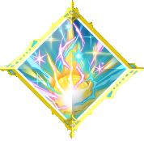

| ORDER | ICON | SKILL |
|---|---|---|
| 1 |  |
Concentration |
| 2 |  |
Fire |
| 3 |  |
Freeze |
| 4 |  |
Gravity Well |
| 5 |  |
Healing Winds |
| 6 |  |
Lightning |
| 7 |  |
Mystic Vortex |
| 8 |  | Flowery Seven |